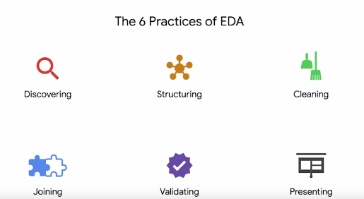

You check out the overall shape,size and content of the dataset. You find it is short on data.
learn moreYou peform a quick check that the new data doesn’t have mistakes or misspellings.
learn moreYou structure the data in different time periods and segments to understand trends.
learn moreYou do another quick check to ensure the new columns you’ve made in structuring are correctly designed.
learn moreYou check for outliers, missing data, and needs for conversions or transformations.
learn moreAfter cleaning, you double check the changes you made are correct and accurate.
learn moreAfter cleaning, you double check the changes you made are correct and accurate.
learn moreThe process of investigating, organizing, and analyzing datasets and
summarizing their main characteristics, often employing data wrangling and visualization methods.
These practices do not necessarily have to go in this order. And depending on the needs of the data team and the type of the data they study they may perform EDA in different ways. You'll also find that often the EDA process is iterative which means you'll go through the six practices multiple times in no particular order to prepare the data for further use.
Data professionals familiarize themselves with the data so they can start conceptualizing how to use it. They review the data and ask questions about it.
The process of taking raw data and organizing or transforming it to be more easily visualized,explained, or modeled. Structuring refers to categorizing and organizing data columns based on the data already in the data set.In terms of calender data as a example it might look like categorizing data into months or quarters rather than years.
Organizing data in groupings,categories, or variables that don't accurately represent the whole dataset.
The process of removing errors that may distort your data or make it less usefulMissing values, misspellings, duplicate entries or extreme outliers are all fairly common issues that need to be addressed during the data set Cleanning.
The process of augmenting or adjusting data by adding values from other datasets.Add more context to the data by adding more information from other data sources.
The process of verifying that the data is consistent and high quality.Checking for misspellings and inconsistent number or date formats.And checking that the data cleaning process didn't introduce more errors. Data professionals typically use digital tools such as R, JavaScipt or python to check for inconsistencies and errors in a dataset and its data type.
Making your cleaned dataset or data visualizations available to others for analysis or further modeling.Sharing what you’ve learned through EDA. And asking for feedback whether in the form of a clean data set or data visualizations.
A graph, chart, diagram, or dashboard that is created as a representation of information.
One of the most important things to learn about the process is to ensure your EDA work does not misrepresent the data itself. The story you uncover should come from the data, not from your mind or biases in the data.
As data professionals, our curiocity and excitement for finding stories in data might cause us to froget the original purpose for data exploration.So we want to maintaing our natural curiocity, but most importantly, what problem need to be solved.This can achive by PACE.
PACE is the workflow some data professionals use to remain focused on the end goal of any given data set.Imagine you work for a multinational company that manifacture office equipment. The finance department ask you to use the last 10 years of data to
predict sales for the next six months.How might you approach your EDA of the data given this task?
EDA stands for Exploratory data analysis, The EDA process is applies to every parts of the PACE.
for example,
Discovering is in line with the planning part of PACE and Presenting can be a major part of the executing part of PACE. As previous example on 10 years of sales data, When you start your EDA, You realized the dataset you've been given contain a lot more data than you need.
It would benifit you and your company to extract only the columns you need to predict sales.
copyright Sadaruwan. DoubleS.